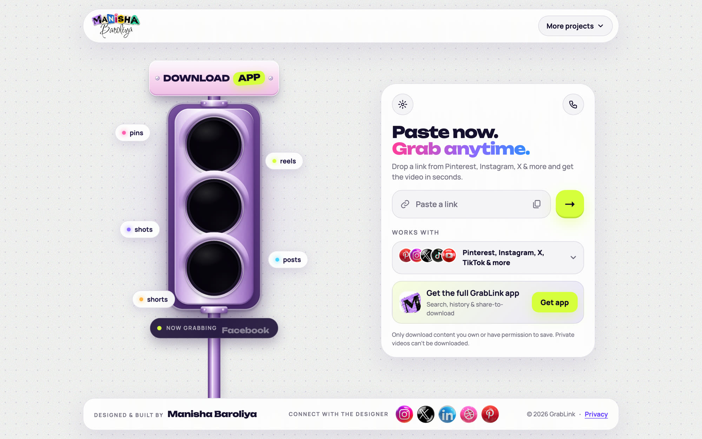

My point of view
If you already hold the link to a video you’re allowed to keep, getting the file should take one paste and one tap. Everything else on the screen is somebody else’s business model.
Paste or share a link and get the video, straight inside the app you’re already using. Designed, written and built end to end.
If you already hold the link to a video you’re allowed to keep, getting the file should take one paste and one tap. Everything else on the screen is somebody else’s business model.
The experience around downloading is the real problem, not the technology. I wanted to show that a free, calm, honest tool can exist, and design every step of it.
Rough layouts used to settle the structure before visual design: where the link box sits, how the quality choice works, and what the app’s tabs hold.
Screens from the running product. Calm surfaces, one loud action in lime, and the same layout on every size. Third-party video thumbnails are blurred.



Type: Unbounded for headlines, Manrope for everything you read.
Link or keyword in a single box, with a platform filter.
Progress bar, quality choice and no second page.
Receives shared links where the browser allows, and offers a copied link when you open it.
No account. Filter by platform, clear any time.
Suggestions and notifications are off until you say yes.
Phone, tablet and a compact laptop window.
Some big platforms block downloads from hosted servers, so the honest design is to say so plainly and move the work onto the person’s own device. A short-link Pinterest video that failed now downloads. The full account, with a table of what works and what doesn’t, is in the case study.
Tap Share in any app, tap GrabLink, and the video is in your gallery. No Downloads folder, no moving files, no leaving the feed.
— The goal for the next version
A small sheet slides up over the app you’re in. One button saves it to a GrabLink album.
The same tap can save a video, a photo post or just the cover image.
Tells you if it’s already saved, and queues the save when you’re offline.
A plan to validate, not a shipped feature. The feasibility notes, risks and test plan are in the case study.